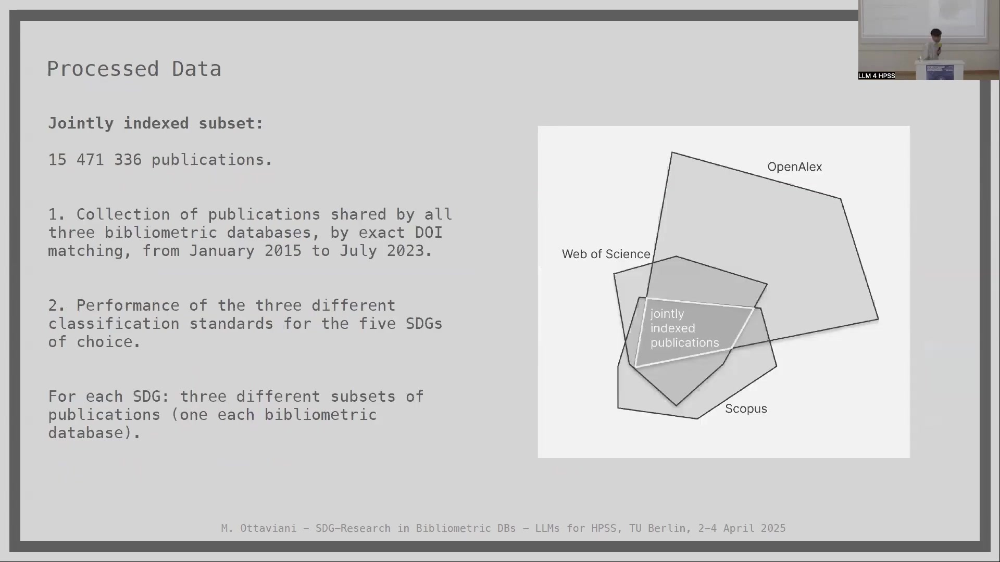
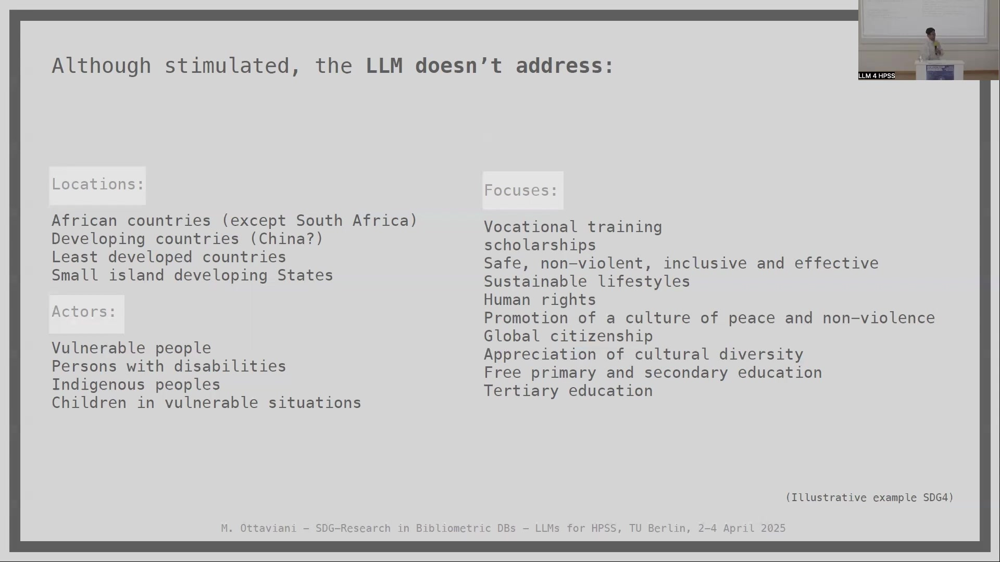

9 The Representation of SDG-Related Research in Bibliometric Databases: A Conceptual Inquiry via LLMs
Overview
This chapter delves into a conceptual inquiry concerning the representation of Sustainable Development Goal (SDG)-related research within major bibliometric databases. Researchers from the German Centre for Higher Education Research and Science Studies (DZHW, Berlin) explore these complex dynamics, particularly through the innovative application of Large Language Models (LLMs). The investigation seeks to understand how different database-specific classifications of SDGs influence the perceived landscape of scientific contributions towards these global objectives. Furthermore, it examines the potential of LLMs not only to reveal inherent biases within these data sources but also to serve as tools for automated information extraction, thereby informing research policy and decision-making. The work culminates from discussions and findings presented at the “Large Language Models for the History, Philosophy, and Sociology of Science” event at Technische Universität Berlin.

9.1 The Shifting Landscape of SDG Classification in Bibliometric Databases
Bibliometric databases function as critical digital infrastructures, enabling extensive bibliometric analyses and impact assessments across the scientific community. From a sociology of science perspective, their role is pivotal. However, one must acknowledge the performative nature of these databases. They are not neutral repositories; rather, they embody specific understandings of the science system and particular value attributions, as scholars such as Whitley and Vinkler have previously noted (Whitley2000?; Vinkler1988?).

In recent years, major bibliometric databases, including Web of Science, Scopus, and OpenAlex, have introduced classifications designed to align published research with the United Nations’ SDGs. This development is significant, yet it introduces new complexities. Previous research, for instance by Armitage and colleagues, discovered that SDG labelling by different providers (such as Elsevier, Bergen, and Aurora) yields disparate results, exhibiting minimal overlap between their respective classifications (Armitage2020?).
These discrepancies in classification carry substantial implications. Varying portrayals of SDG-related research can lead to different perceptions of research priorities. Consequently, such differences may influence resource allocation and shape policy decisions, potentially reflecting underlying political and commercial interests.
9.2 Investigating SDG Representation: A Case Study Utilising Large Language Models
The core motivation for the current study, detailed by Ottaviani and Stahlschmidt, stems from a desire to understand the aggregated effects on the representation of SDG-related research when LLM-based tools are introduced into bibliometric analysis (OttavianiStahlschmidt2024?). The investigation employs pre-trained, relatively small Large Language Models, specifically DistilGPT2, which are separately trained on subsets of publication abstracts. These subsets correspond to the SDG classifications provided by diverse bibliometric databases.

Within this framework, LLM technology serves a dual purpose. Firstly, it acts as a detector, helping to identify potential biases present in the data originating from different bibliometric sources. Secondly, its application functions as a proof-of-concept exercise. This exercise explores the viability of introducing LLMs to automate information extraction, a process intended to inform decision-making within the research landscape.
9.3 Methodological Framework
The research adopts a carefully structured methodological framework to explore these questions. This section outlines the key stages of the research design, from data processing to the specifics of LLM implementation and benchmarking.
A systematic approach underpins the entire investigation, ensuring rigour in the collection, analysis, and interpretation of data related to SDG research representation.
9.3.1 Data Curation and Preparation
A crucial initial step involved the creation of a jointly indexed subset of publications. This dataset comprises 15,471,336 publications that are shared by all three major bibliometric databases—Web of Science, OpenAlex, and Scopus—identified through exact DOI matching. The period covered spans from January 2015 to July 2023.
The study then focused on the performance of the three different classification standards for five selected SDGs. This approach means that for each chosen SDG, three distinct subsets of publications were considered, one corresponding to each bibliometric database’s classification. The visual representation on the accompanying slide illustrates this overlap, with the central portion denoting the “jointly indexed publications” common to all three.

9.3.2 Comparative Analysis of Database Coverage
An analysis comparing SDG-classified papers among the three bibliometric databases reveals interesting patterns, particularly within the socio-economic dimension. For instance, considering SDG 4 (Quality Education), SDG 5 (Gender Equality), and SDG 10 (Reduced Inequalities), the overlap in classified papers varies significantly.

For SDG 4, the intersection of all three databases accounts for 7.2% (46,711 publications) of the total papers classified under this goal by at least one database. OpenAlex uniquely identifies the largest portion (33.6%), followed by Scopus (20.5%) and Web of Science (19.1%). In contrast, for SDG 5, Web of Science uniquely identifies a substantial 57.4% of papers, with the common intersection being smaller at 4.1% (26,327 publications). SDG 10 shows yet another pattern, with OpenAlex (43.3%) and Scopus (32.7%) contributing the largest unique sets, and the shared core representing only 1.3% (9,101 publications). These figures, drawn from Ottaviani and Stahlschmidt’s work, underscore the considerable divergence in how these databases delineate SDG-related research (OttavianiStahlschmidt2024?).
9.3.3 Large Language Model Implementation Strategy
The central idea behind employing LLM technology was to construct models whose knowledge originates exclusively from publications classified under a specific SDG by a particular bibliometric database. Ideally, this would involve training an LLM solely on these publications from scratch. However, creating such a bespoke LLM from the ground up is a resource-intensive endeavour.
As a practical compromise, the researchers opted to fine-tune an existing pre-trained LLM that possesses minimal prior knowledge, using the abstracts of the relevant publications. This approach allows for the development of specialised models for each SDG as defined by each database—for example, one LLM trained on Web of Science data for SDG 4, another on OpenAlex data for SDG 4, and so forth. The arrow on the slide (Slide 10) visually connects the concept of training an LLM solely on publications from one database (e.g., Web of Science for SDG 4) to the fine-tuning strategy.

The selection of an appropriate LLM was critical. Leading commercial and open-source pre-trained LLMs were deemed unsuitable for this work because they already embed considerable knowledge about SDGs and possess strong, pre-existing semantic associations. Their pre-training datasets often include texts directly related to SDGs, such as content from Wikipedia or Reddit conversations, which would confound the analysis of database-specific representations.
A fair compromise was found in DistilGPT2. This model is a “very light” pre-trained, English-speaking variant of the open-source GPT2, which employs a technique called “distillation” (Sanh2019?). DistilGPT2 has significantly fewer parameters (82 million) compared to large models like GPT-4 (estimated at 1.76 trillion parameters), making it feasible to work with proprietary data. Its relatively “little instructed” nature ensures greater similarity with the fine-tuning data, allowing the researchers to create distinct models, denoted as DistilGPT2 {bibDB, SDG}, for each combination of bibliometric database and SDG. This approach led to the fine-tuning of 15 such LLMs for the study, covering five SDGs across the three databases. The accompanying slide displays Venn diagrams for several SDGs (04, 05, 08, 09, 10), illustrating the publication distribution that forms the basis for these fine-tuning datasets.

9.3.4 Establishing Benchmarks: SDG Targets and Prompts
To evaluate the fine-tuned LLMs and understand their learned representations, the research focused on specific SDG targets. SDG 4, which aims to “Ensure inclusive and equitable quality education and promote lifelong learning opportunities for all” (UN2030Agenda?), serves as a clear example. This goal, like others, is broken down into several detailed targets.
The targets for SDG 4, as outlined by the UN, include:
- 4.1 By 2030, ensure that all girls and boys complete free, equitable and quality primary and secondary education leading to relevant and effective learning outcomes.
- 4.2 By 2030, ensure that all girls and boys have access to quality early childhood development, care and pre-primary education so that they are ready for primary education.
- 4.3 By 2030, ensure equal access for all women and men to affordable and quality technical, vocational and tertiary education, including university.
- 4.4 By 2030, substantially increase the number of youth and adults who have relevant skills, including technical and vocational skills, for employment, decent jobs and entrepreneurship.
- 4.5 By 2030, eliminate gender disparities in education and ensure equal access to all levels of education and vocational training for the vulnerable, including persons with disabilities, indigenous peoples and children in vulnerable situations.
- 4.6 By 2030, ensure that all youth and a substantial proportion of adults, both men and women, achieve literacy and numeracy.
For benchmarking the LLMs, a systematic approach to prompt generation was adopted. Each SDG typically comprises 8 to 12 targets. For every target, researchers formulated 10 diverse questions, or prompts, each designed to probe different facets of that specific target. This process resulted in a dedicated set of 80 to 120 prompts for each SDG. These prompts serve as the benchmark or standard for defining compliance with SDG objectives and for identifying potential “biases” or thematic skews in the knowledge captured by each fine-tuned LLM. For example, Target 4.1 (“ensure that all girls and boys complete free, equitable and quality primary and secondary education”) generated prompts such as “How can countries ensure that all girls and boys complete free, equitable and quality primary and secondary education by 2030?” and “What are the challenges in achieving free and equitable education for all?”.

9.3.5 Research Workflow
The overall research design for each combination of bibliometric database (bibDB) and SDG (SDG#) follows a structured workflow. It begins with the set of abstracts classified under a specific SDG by a particular database. This text corpus is used for fine-tuning the DistilGPT2 model.
The fine-tuned DistilGPT2 model, now specific to that SDG and database (Fine-tuned DistilGPT2 SDG# DB#), is then queried using the set of prompts specifically designed for that SDG. Different decoding strategies—namely top-k sampling, nucleus sampling, and contrastive search—are employed to generate responses. These varied strategies help in exploring the breadth and nature of the information the model can produce.
The responses generated for each decoding strategy (Responses SDG# DB# for top-k, nucleus, contrastive search) subsequently undergo a filtering process, specifically focusing on the words from the original prompts. Finally, noun phrases are extracted from these filtered responses (Noun phrases SDG# DB#). These noun phrases form the basis for analysing the thematic content and biases reflected by each LLM, and by extension, the underlying bibliometric database’s representation of the SDG.
9.4 Analysis and Discussion of Findings
The subsequent phase of the research involves a detailed discussion of the results obtained from the fine-tuned LLMs. This analysis aims to shed light on how different bibliometric databases represent SDG-related research and what biases might be inherent in these representations.
9.4.1 SDG 4 – Quality Education: An Illustrative Analysis
An illustrative example using SDG 4 (Quality Education) demonstrates the analytical approach. Researchers analysed the LLM responses by matching the extracted noun phrases with the official SDG 4 targets. This comparison occurred across four data dimensions: Locations, Actors, Data/Metrics, and Focuses. For each SDG, this method allows an assessment of:
Compliance with its targets (i.e., how well the research captured by the database, and reflected by the LLM, addresses the specific aims of the SDG).
Biases (i.e., over or under-representation of certain themes, regions, or populations).
The analysis reveals that differences in the source bibliometric databases are indeed present in the LLM outputs. For SDG 4, unique elements surfaced from different database-trained LLMs. For instance, under “Unique DBs” (meaning concepts more prominent in LLMs trained on specific databases), certain locations like South Africa, U.S., Australia, China, and Hong Kong were notable. Actors such as “Classroom” and “Family” appeared, alongside specific data/metrics like “Survey,” “PISA,” “Self-Efficacy,” and “Thematic Analysis.” Focuses included “Engagement,” “Performance,” “Career,” and “Curriculum.”
When examining “Addressed Targets” more broadly (i.e., aspects of SDG 4 that the LLMs collectively touched upon), actors like “All Women And Men,” “Children,” “Teachers,” and “Youth” were identified. Focuses aligned with “Quality Primary And Secondary Education,” “University,” “Gender,” and “Literacy.”
Conversely, “Not Addressed Targets” highlighted significant gaps. Geographically, many African countries (except South Africa), developing countries more broadly, least developed countries, and small island developing states received little attention. Vulnerable actors such as “Persons With Disabilities,” “Indigenous Peoples,” and “Children In Vulnerable Situations” were largely overlooked. Key focuses like “Affordable And Technical, Vocational And Tertiary Education,” “Relevant Skills” for employment, “Scholarships,” and “Safe, Non-Violent, Inclusive Learning Environments” were also underrepresented in the LLM-generated content.
9.4.2 Identified Gaps in LLM Responses for SDG 4
Further scrutiny of what the LLMs did not address, even when stimulated by specific prompts related to SDG 4 targets, reveals persistent omissions. These gaps suggest areas where the collective research corpus, as indexed by the databases and subsequently learned by the LLMs, is deficient or where the models fail to connect existing knowledge to specific target dimensions.
Regarding locations, the LLMs struggled to provide substantive information concerning:
- African countries (with the exception of South Africa)
- Developing countries (the status of China in this context is noted as a query)
- Least developed countries
- Small island developing States
In terms of actors, the following groups remained largely unaddressed:
- Vulnerable people
- Persons with disabilities
- Indigenous peoples
- Children in vulnerable situations
Concerning the focuses of SDG 4, several critical aspects were notably absent or poorly represented in the LLM responses:
- Vocational training
- Scholarships
- The provision of safe, non-violent, inclusive, and effective learning environments
- Education for sustainable lifestyles
- Human rights education
- Promotion of a culture of peace and non-violence
- Global citizenship education
- Appreciation of cultural diversity
- The principle of free primary and secondary education
- Broader aspects of tertiary education beyond general mentions
This illustrative example for SDG 4 highlights systematic under-emphases within the analysed research literature as represented by the LLMs.
9.4.3 Cross-SDG Observations and Implications
Expanding the view beyond SDG 4 to consider findings across all five SDGs analysed, several overarching considerations emerge. These observations point towards systemic patterns in how SDG-related research is represented and potentially skewed within bibliometric databases.
Concerning Locations: Least developed countries are barely addressed in the research corpus for most of the analysed SDGs, with a minor exception for Sub-Saharan Africa in relation to SDG 8 (Decent Work and Economic Growth). Beyond the undoubted monopoly of research focusing on the U.S., South Africa and China emerge as the next most frequently quoted locations. Following these, the UK and Australia also feature prominently. This geographical concentration suggests significant blind spots in the global research landscape concerning SDG implementation and challenges in many parts of the world.
Regarding Actors: A consistent finding is that discriminated and vulnerable categories of people are systematically overlooked across the board. This lack of focus on those most in need is a critical concern if research is to effectively inform equitable progress towards the SDGs.
In terms of Metrics: The LLM responses frequently referenced various forms of data (e.g., Demographic and Health Surveys (DHS), World Values Survey (WVS)), specific metrics, indicators, and benchmarks. Different research methodologies, including theoretical and empirical approaches, thematic analysis, market dynamics, and macroeconomic studies, were also apparent. This indicates a diverse methodological landscape but does not necessarily translate to comprehensive coverage of all SDG facets.
Regarding Focuses: Whilst many SDG-specific themes are addressed, the most sensitive or challenging aspects within each SDG are often missing from the LLM-generated narratives. Examples include topics like human trafficking, various forms of human exploitation, and migration-related issues. The absence or under-representation of these critical themes signals a potential reluctance or inability of the current research landscape, as captured by these databases, to fully engage with the hardest parts of the SDG agenda.
These cross-cutting observations underscore the value of using LLMs as analytical tools to probe the content and contours of scientific literature. They also highlight the profound influence that database construction and classification practices can have on our understanding of global research efforts towards sustainable development.
